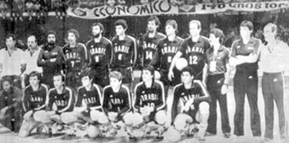

História do voleibol no Brasil
O voleibol - ou vôlei - chegou no Brasil no ano de 1915. Não se sabe ao certo quem trouxe o esporte ao país, mas foi nesse ano que aconteceu a primeira partida de vôlei na cidade de Recife, Pernambuco. No entanto, o esporte, que hoje é muito difundido no país, somente começou a ganhar força em 1923. Isso porque nesse ano foi organizado o primeiro campeonato no Rio de Janeiro, sendo o Fluminense o primeiro clube brasileiro profissional criado. A partir disso, o esporte foi crescendo e adquirindo adeptos e hoje é muito praticado, sobretudo nas aulas de educação física. Note que, depois do futebol, atualmente o vôlei é o esporte mais popular do Brasil.
Como foi o início do voleibol no Brasil?
No início, esse esporte era considerado especialmente de mulheres. Por ser pouco violento, os homens não praticavam.
Com o passar do tempo, ele foi sendo difundido também entre o sexo masculino e hoje, além da modalidade de quadra, o voleibol é jogado na praia (vôlei de praia).
Primeiramente, ele teve início no nordeste, no Colégio Marista de Recife em 1925.
Nos anos seguintes, por meio da Associação Cristã de Moços da cidade São Paulo, ele começou a se espalhar por outros estados. Abaixo a foto do time.
A fundação da Confederação Brasileira de Voleibol (CBV)
Em 1954 foi fundada a Confederação Brasileira de Voleibol (CBV). Até hoje, a CBV é a entidade responsável pelo esporte no país e graças a ela o voleibol foi consolidado no Brasil. Após sua criação, muitas escolas de vôlei foram sendo criadas no país, o que promoveu a difusão do esporte. O primeiro presidente da CBV foi o ex-jogador Denis Rupet Hathaway (Não foi encontrado nenhuma foto de Denis), que ocupou o cargo durante dois anos (1955 a 1957). Graças ao trabalho desenvolvido por essa entidade, hoje o Brasil é um dos melhores países do mundo em voleibol.
O desenvolvimento do vôlei no Brasil
O voleibol somente começa a se fortalecer no país na década de 70. No final dessa década, mais precisamente em 1977, ocorreu o 1º Mundial Juvenil das categorias masculina e feminina. O resultado foi terceiro e quarto lugares, respectivamente. Abaixo temos a foto do time da época, infelizmente não foi encontado nenhuma gravação somente está foto 
O início das vitórias do Brasil no voleibol
Em 1951 o voleibol masculino teve seu primeiro grande destaque no Campeonato sul-americano. No entanto, foi na década de 80 que a seleção masculina, denominada na altura de "Geração de Prata", começou a se consolidar no cenário mundial.
Foi assim que ganhou mais uma vitória nos Jogos Pan-americanos de 1983 e, no ano seguinte, a seleção masculina adquire a primeira medalha olímpica de prata nos Jogos Olímpicos de Los Angeles. Abaixo temos o jogo em questão, onde o Brasil se consolidou prata conta os Estados Unidos
A primeira medalha de Ouro nos Jogos Olímpicos
O tão almejado ouro foi conquistado na década de 90 pela seleção masculina. Assim, venceu a final contra os Países Baixos em 1992 nas Olimpíadas de Barcelona adquirindo a primeira medalha de ouro.
A vitória da seleção masculina de voleibol em Barcelona, 1992.
A partir daí, o esporte obtém notoriedade mundial e começa a ter grandes investimentos com a chegada de bons jogadores, o que resultou nas posteriores conquistas.
As seleções de vôlei no Brasil
Atualmente, a seleção brasileira de voleibol é considerada uma das melhores do mundo.
Na categoria masculina, a seleção é tricampeã mundial (1992, em Barcelona; 2004, em Atenas; e 2016, no Rio de Janeiro) e já ganhou 6 medalhas olímpicas (3 de ouro e 3 de prata).